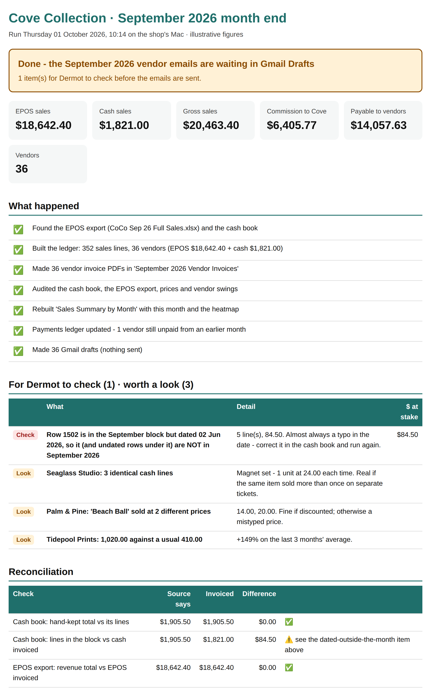
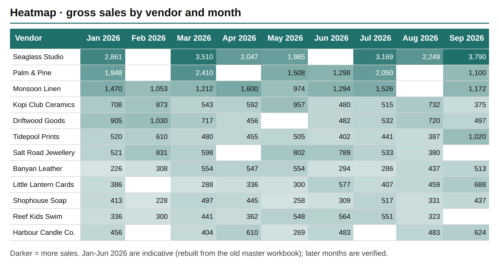

Case study · Built with Claude & Claude Code
Cove Collection: the month end that checks itself.
A consignment shop in Singapore pays around 40 vendors every month. I built the system that works out what each one is owed with Claude, then gave it a Claude Code layer that runs the month, audits it and explains what it finds. I don't write the code. I decide what it has to get right.
The problem
Two spreadsheets, forty vendors, and money that has to be right.
Every month the shop exports its point-of-sale sales to Excel and keeps a hand-written cash book for everything else. Between them, they decide what each consignment vendor is paid: the shop's commission comes off, the rest goes to the vendor, with a sales report showing exactly what sold.
By hand, it took the best part of a day: a tab per vendor, a lot of copy and paste, and mistakes that were easy to make and hard to see. One copy-and-paste step once quietly dropped a few hundred dollars of sales from a month's figures. And the person who runs it is the shop's owner, on a Mac, with no wish to become a developer.
How it works
One button, six steps, and a page that says what happened.
Read the inputs
The EPOS export and the shop's own cash book, straight from a shared OneDrive folder. Columns are found by heading, not position, because the export comes in two shapes.
Build the ledger and reports
One consolidated ledger, then a PDF sales report for every vendor. Plain, deterministic Python: same inputs, same answer, to the cent.
Audit
Cash-book lines against the shop's own hand-kept monthly totals, EPOS lines against the export's own revenue total, plus misdated rows, price mismatches and vendors far from their usual month.
Keep the records
A rolling summary workbook with a vendor-by-month heatmap, and a payments ledger that carries forward anything still owed.
Draft the emails
One "Make drafts?" prompt, then a Gmail draft for each vendor with their report attached. Nothing is ever sent automatically.
Say what happened
A plain-English summary page opens at the end: what ran, what reconciled, and what needs a human before anything goes out.

Where Claude Code fits
Claude Code is the operator on my laptop: briefed, scoped and fenced in.
The money is handled by code. Claude Code sits on top as operator and reviewer: it runs the month, reads the audit, explains the exceptions in plain English and proposes fixes. Three pieces make that safe enough to trust with a small business's payouts.
The briefing
Loaded every time Claude Code opens the folder: what the business is, where every file lives, and the hard rules it works within.
Two slash commands
Saved procedures I trigger by name. /month-end runs the month in batch mode and explains the audit. /month-review reconciles, compares month on month and writes a review with numbered fixes.
The fence
A settings file that lets it read freely and run the month, denies editing spreadsheets, drafting email and deleting files outright, and makes anything else ask me first.
# CLAUDE.md, hard rules (excerpt, lightly condensed)
1. Never send email, and never create Gmail drafts.
2. Never modify the EPOS export, the cash book, the ledger or the PDFs.
3. Never edit a spreadsheet. Name the cell and the value to type.
4. Never delete anything.
5. Fixes go through Dermot: propose, wait for a yes, then edit.
6. Figures come from the files, never from memory or your own arithmetic.
Month end, from my side: I type /month-end September 2026, and a few minutes later Claude Code comes back with the verdict, the totals, and exactly which cash-book row needs fixing and who should fix it. When it proposes a change, it waits for my yes.
The design principle
Code for the money. Claude for the judgement. A human presses Send.
Every figure a vendor sees comes from deterministic code. Re-run on July's inputs, it reproduced the hand-built month exactly, across 33 vendor reports, to the cent. Claude never produces a number. Its job is the part code is bad at: noticing, explaining, and suggesting what to do next.
And nothing leaves the building without a person reading it. The drafts wait in Gmail until the owner has read them and pressed Send. That boundary is what makes it comfortable to hand over, and it's the same boundary an enterprise needs before it lets an agent near anything that matters.
What it caught
The first audit found sales that would never have been paid.
The first time the audit ran across the cash book, it flagged row 1502: five cash sales in the September block, dated 2 June. Left alone, they'd have been counted in June, a month already paid out, and those vendors would never have been paid for them. A typo in a date, invisible by eye. The audit names the row and what's at stake, Claude Code explains it in a sentence, and the summary page puts it at the top before any email goes out.
It keeps the long view too. Every run rebuilds a vendor-by-month summary, so a vendor who suddenly doubles, or goes quiet, stands out at a glance.

Who did what
I don't write the code. I own what it has to get right.
| Me | Claude |
|---|---|
| Defined the job: the inputs, the outputs, and what "right" means for a payout. | Wrote the toolkit: ingestion, checks, PDF reports, Gmail drafts, the audit and the installers. |
| Set the rules: commission, what stops a run, and where a human signs off. | Built the Claude Code layer: the CLAUDE.md briefing, the two skills and the permission fence. |
| Ran it on real months and checked the output before anything went to a vendor. | Reproduced July exactly before anything went live. |
| Got it onto a non-technical owner's Mac and set up her monthly routine. | Debugged the install live, over chat, when her Intel MacBook refused one library. |
Built in conversation with Claude in the Claude desktop app (Cowork). Operated each month by Claude Code on my laptop.
What didn't go smoothly
Her MacBook is Intel. One library had no ready-made build for it, so the installer tried to compile it from source and failed. The fix was to accept ready-made packages only.
Google's sign-in expires weekly while the app is in testing, so she signs in once a month when she makes the drafts. Publishing the app, once the shop's website is live, removes that step.
What it taught me
The question that mattered was never whether the model was clever enough. It was where it stops, who checks it, and what happens when it's wrong. Permissions, an audit trail and a human on Send answered those questions for a family business. They're the same questions an enterprise buyer asks, and they're the ones I want to spend my time answering.